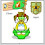
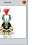
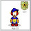
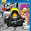
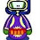
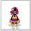
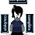
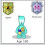
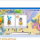

Hello there!
You all saw this place on Chobots ;) And I'm sure you like it!

So I'd like to ask you a Q :)
What clothes or accessories should we add to the shop? Or maybe instruments?
I'd like to hear your opinion! Share your ideas and be creative!
Hiki

-2.jpg)


257 comments:
«Oldest ‹Older 1 – 200 of 257 Newer› Newest»We should add retired items to the shop cause their just so cool!!!
~Plunder P.S. First Comment!
Maybe some Tye-Dya t-shirts. Maybe a knight suit! or somethin to bring back 70's! lolz
-NarutoUzamaki
what about a drum
plz go to chobotsnews.com and follow
oh yeah, and maybe during winter bring back the scarf? The scarf is awesome!
ummm we should have some items like idk vehicals?? i'll think of more
we should have slippers pijamas skirts tights and socks hope u like my idia
~nikita911~
what about mod items in contest? you should make a combanation item with wierd stuff oh make a shop where you choose your cloth and pand shirt shoes whatevr and combine then together! =D
the hat william has and the boots everyone really wants those =)
we should bring back old items into the shops

hi, bracelets, necklaces, belts would be nice :)
suits for girls, maybe like ballet suit
sports items and suits
for more instruments i would want violin
-aqua144
and some rocket feet
put the superman suit and camo back in
also purses,
more shoes
maybe a microphone lol
we should add more stuff, to the shop, like ipod thingy's lol..
like undershirts, for guys.. :D accesories for girls.. :D
like sumthin cool,.. lol
mabye the mods rocket boots the ones that chobot has lol mabye lol just a idea lol
~piersy99~
batman suit,knight suit, indian,dragon and the third eye costumes look on choots blog it is
http://www.chobotscheatsbychobot.com/
I think u should give ack all the old clothes
Well i think we should bring back all the items we have ever had. I also think we should be able to buy a piano for our house think we should be able to buy skate boards and roller skates.There should be a type of customizer where you could make your own clothes and then you could sell them!Then when somebody buys it the people who made the suit gets 77% and chobots gets 23%.
Those are my ideas
*hiimcool*
mabye a place in the shop where u can make ur own clothes and write on them that would be awsome!
There should be a "make your own shirt feature". Like when you make your pet. it will cost 300 bugs at first but when you add extra features (like choose your own colours, add a picture, and add a word)it will add more to the cost. Sounds cool to me :)
-vintage
i have a few designs i would like to send to u. but i dont know how! so instead ill just post up the designs on my blog. here it is.
shrinkychick.blogspot.com
plz enjoy the designs.
~shrinkychick

hey! i was wondering if you could put flame wings in shop? and for an instriment you could put in a clarinet, that would be soooo cool wouldnt it hiki!!! hope u like my idea
~Chewer
skateboards, more hoodies
I drew six outfits. here is the link....
http://i369.photobucket.com/albums/oo136/beexubearant/choooo.png
also, i think we should have dress up games on chobots, where we can dress up chobots!
We should definitely add a trumpet, because it is on the front of the instruments catalog and you don't have one. I also think you should add the new items that chobot has been wearing, the third eye, the Indian, and the Dragon. Also you should have secret items in the catalogs that are rare.
It would be a good idea to get other instruments like a trumpet, harmonica, and maybe a flute.
Well, since you have asked.
Older citizen items should be made available to non-citizens. For example, the light bulb; the hair; as well as the clothing items.
As far as new items: summerwear, aka swimsuits; accessories such as belts, purses and barrettes; holiday items such as Halloween outfits; and sports outfits.
I am sure that my fellow Chobots will think of a million better ideas!

mmm................
i think headphones for non citizens and hats for non citizens
thanks hiki :D
~Agent Ghoni
Well I have some designs I sent you and are put up in my blog. Visit it and see at gigvideogameinfo.blogspot.com
Super cho suit and camo suit
Flamergamer
We should have some more summer stuff.Then we should have a a watch.Then a camo suit for girls.Super-Girl suits.Football suit.Transfer the masks to shop.More hair!
Hey! Im going to send in a lot of ideas that I already made. I didnt send them in before because my comp.was messed up. =( But its better now so im going to send them in now! =) wait who/where do I send the clothing ideas too? =) thanx -Bol18
Maybe Baseball caps......
Elvis costume?? lol!
how about a white glove...
or a white suit like the agent suit.
We need Basketball, Soccer, Baseball and Football uniforms. (With the tennis shoes, cleats and sports equipment. Interactive maybe.) You can choose the color, they all have white trim, and you can choose the number. (optional) If u can only do 1 plz do the basketball one. You REALLY need to do a portable, 7-peice drum set. PLEASE! I am a major drummer and it would be AWESOME.
You should also do a shaggy boy haircut and a curly girl's haircut.
Bunny Slippers
Gloves, Snow Boots, Snow Suits, Scarfs
Hoodies
Decorative Shirts
Halloween Masks
Belts
Shorts, Sleevless-Shirts, Flipflops
Clown Hair, Clown Shoes, Clown Make-Up
I will think of some more later.
I May design some things like these later to.
-Seether
OMG OMG OMG THIS IS AWESOME! Hiki u have to see meh video on summer styles! i got to do more for guys though xD
Just go to youtube and search
Summer Styles
And it should pop up!
~Gmailchatter
THE HI SHIRT! WOOHOO! Hope you like it!
tiny.cc/hishirt
There should be others that say HEY or BYE. I call them greeting shirts!
~kymaster
how about a new location that is swimming pool and we can have swimming suits :)
I got a kool idea. Really kool backrounds for our playercard cause the white is getting soooo boring. maybe get diffenrent vehicles like a 6wheel skateboard or a unicycle maybe even a bike thats floats. Idk. oh maybe like dog tags and necklaces stuff like that to make our chobots more pimpin!! Oh maybe like an afro and disco stuff. I think we should have more clothes that bring out our past time, culture, and old stuff from the 1600's to the 1980's
Thats my idea. Well cya
Crayz updated blog.
tipsonchobots.tk
~wallgreenz! and follow plz
maybe there should be a create your own chlothes thing and for instance each top or jewlary or pants cost something different, just like how you create and buy your pets. :D
-uspinmyhead
I think tie die would be cool! we could have all cool stuff and have a 70's party! Maybe a flute too. Oh and I really want one of those scarves!
....hello we could add some heros suits like marvel and DC comics ex=spiderman,superman,flash,green lantern!!! hope you like my idea .
Thank You, bola500
I have Some cool ideas, we could have backgrounds for your Char Cards, maybe Cho-Cars and more shoes, hiking shoes, tennis shoes and slippes :D hope you like my ideas! You other guys also have some good ideas too!
t shirts that u write on wat it says on it!
and u should have a one man band type instrument
and also obviously i would say some of my designs lol
We should have all the nick names of the mods in every color u can think of and the old citizen stuff should be for non citizens too.
- jago
mimos776 got an idea he said we should make blue spy suits he doesnt have a google account so i am writing for him -flaregon
Hi,
We should get some skirts for girls and tights and maybe some aluminous items and some dresses but like the dress with the puffy skirt bit and for boys some blue long jeans maybe wholes in lol eer a seprate hat and maybe some swimming trunks for boys and bikinies for girls
~Posted by~pretty5princess~
p.s I hope u like my idea
Oh and we should get some cats so u can get in ur own car and go around the city
I hope u love my ideas
~Pretty5princess~
we should put the mummy suit back into the catolog
Maybe put a tuxedo in the shop but put the top hat separate and a drum set that u can play at your house that's a house item and a dragon costume and everything i just said can we make it non-citizen cause non-citizens need new stuff not just citizens.
also there could be suits for every game or mission. Like space race suit, sweetbattle suit, chopix suit :)
visit my blog aqua144sblog.blogspot.com :)
You should bring back the eye shadow, waist belt, tutu, and earrings, and add a violin, trumpet, or tuba to the instruments, if you don't already have those. You should also make more items for non citizens and add
Thanks! :)
~Yolande
I suggest There should be a Hero Costumes for citizens and non-citizens you may not include the superman suit but new hero costumes!
you shpould put a new kind of flag in the shop for noncitizen
-swantonbomb-
Hey,
I think some jewelry would be cool like neck-laces and also maybe flags that you can design yourself like put your own picture on it from a selection or write your name on it and maybe fluro colors or singlet tops colored or died?
Hope you like My ideas ;)
~Fusty~
What about a Spy item! like a spy tux! and stuff for non cits. cause non-citizens dont get enof cool stuff.
hey! its chewer here i was wondering if u could make kukazu a agent hikikomori because he helps me out and he's really nice

How bout you bring out some light up shoes 1 for non members and members like the rocket boots and how bout a mario costume
Can we add some old items everyone liked and I think there should be a pony tail hear for girls :D how about a belt.
mabey sports stuff like football cloths and soccer cloths and a soccer ball?
white sunglasses to non citizens
its smilez134
jerseys!!!
you should add the indian suit, 3-eyed suit and dragon suit
what about 3D glasses
there should be MORE items for non-citizens like when a new catalog comes out the items that were for citizen's should now be for non-citizens :D
now cloths you should bring back the eye shadow and there should be ALOT more items :D
OH BTW I Heard A Rumor That Trade And Gift Is Coming Back On August 1st Is That True I Hope It Is :D
-Greenpopper
They Should Really Bring Back OLD Items Everyone Loves Rare Items xD
maybe radio controlled cars that you can drive
OMG ADD A MUSCLE SHIRT OR A GANGSTA SUIT AND A PRISON SUIT WITH THE CHAINS AND EVERYTHING!!!! or maybe some butterfly wings and a Banjo Or A Glokeinschpeil!!! lol ~blainyboy2627~
Everything you can see in the real world...add all the clothes :p
and winter clothes summber clothes..idk but i think the 1st i dea indis comment is better
we should have a cloth maker in the shop its a machine that lets u make ur own cloths and it will have a price on it for u to buy ur own cloths
Maybe costumes like a dog costume, cat, bird, elephant and mice
this is a weird one but not that weird, a shirt or costume that has purpleburple2 on is
ummm, somethhing rainbow
i would add a stringed instrument, like violin or cello viola,etc
user:firebot4
I know, a snake , a snake scarf, (snakes are the best annimals ever)
you should add more non citizen clothes like skinny jeans, rings,bracelets,scooters for non citizens,and a microphone
i know, a pop star shirt or costume!!!!!!!!!!
and also i'd add different mod styles, like in the shop now are pg shrits and stuff like that
OMG PLZZ THIS IS SOOO AWSOME!!! HIKI!!! PLZ LOOK AT THIS COMMENT!! I SENT "COSTUME" IDEAS TO TINA! PLZZ THINK ABOU THEM! TO SEE THEM QUICK GO TO worldofchobots.blogspot.com AT THE BOTTOM OF THE PG! R MY DESIGNS! HAVING COSTUMES WOULD BE SWEET ESPECIALLY FOR CONCERTS! Thx sooooo much Hiki!
-Mcho04
there should be a flute
p.s.my chobot is nickels2000
hmm mabey a hi shirt and a bye shirt
dont bring back old items otherwise theyre not rare. And remove 30% clothes avaliable in shops right now and add more cool stuff.
-Luyil
this is a werid one or not that weird again, a goggly eyes glasses,,,,,, a clown costume maybe the ice age 3 sloth or the mamoth costume flower dress a footy costume more dresses more shoes!
we should have the beta iteams back in the shop 4 every1
and we should have the flute as an instrument
-preston12
and the flute is 4 non citizens
-preston12
Ooh also transformer suit would be cool. im designing a rough copy if its okk! :-)
-Mcho04-
i think you should make old citezens items turn into non citezen items and if i remember correctly youre bringing back retired items + you should make a swimsuit and non citezens caps.
~frost4141~
You guys should also add clothing to the stores that promote new movies that are coming out soon, and they could be there for only a limited time. For instance, for Harry Potter there could be a little wizard hat and beard or something.
~Yolande :)
Of course, name shirts!! And some old mod items, like carrot, and chlos shirts. and some shirts, where you can design your own with paint!!
If u want more ideas than check out my blog my cousin or BFF makes awesome styles for girls and boys.
Just at boy11chobots.blogspot.com
~Boy11
I think u should add like a tuba or a banjo violin maybe like some rolar skates or skateboards a pilgram suit a tuxedo a
~Bans121~
Mods I want to tell u something why all the chobots has that small ball in there heads? Plz respond:)
~Boy11
maybe put a sort of tank top for the guys and for the girls maybe bring back the earings or a dancer outfit and ring back some of the old items aswell
ninjadrago........
ummm...oh the old jacket that vayerman has. for non citizens. angle suits for non citizens. those shoes thingys, ummm more hair for non citizens or make the citizens hair non citizne(all retired items)
PLEASE STOP THE EMAILS NOW!
More Non Citizen Clothes please...
~Jellyonthedog
you should add a golf design so you can buy them then play chobots mini golf with them ;) this northian
the beta items i was no vacation during the beta items i wish i wasnt on vacation :( i would have gotten my santa cluase hat

I think there should be new rocket boots in the shop.
Jedilachlan
well, i would like 2 add a helmet. like, a skateboard helmet. that was 1 of my designs that i posted on the chobots forum.
I would like to see beach wear and towels plzz, I think it would cool:)
-angus600
Can you plz get rock gear like guitars and drums and mohawks and mics plzzzz
This something that I really want in the shop is computers I am crazy for computers you could put laptops and desktops pretty plz with a cherry on top lol:)
we should have shirts that when you buy it you can draw on it or write on it so you have your on t shirt style!
just an idea
iceblock9
You should bring back the mummy suit.
Ps. check out my site(click my name)
-Cptestninja
how about the superman suits and plz make them non-citizen
you should have cloth making machine.
We can choose wether to make a shirt, hat, eye wear, pants, etc. and we can create and decorate our own cloths!!
Or
WHy dont you hide secret exclusive clothing in the catalog that can only be accsed if you find the secret button! Ther is one in every catalog.
I think maybe a backpac like a school bag or or maybe for the girly girls a like hand bag. ok time for clothes i think you could have some of the old things like the skirts they were cool and i have none and maybe some of the rain clothes i think that would be nice for people who always miss the rain also you could make a new flag for everyone to buy and make sure you dont make everything citizens lol!!!
~twilight_eclips~
i would like to see rain coats for when it rains and hats and rain boots and unbrellas. also earings for girls and boys that you can make any color.also seether had on his blog these really cool icy wings that people would love to have. sports outfits soccer,baseball,gymnastics etc.jester outfits christmas in july party would be fun to do. colored afro hair dos. bring back the skirts for girls. high heels with fish in the heels.or little aliens in them.birthdays shirts that people can wear on there birthday or for there birthday party! blinking necklaces braclets .bathing suits so we can have beach party in space. green alien masks nationality shirts and we could have a forgien party or have people dress in there nationality colors and have that kind of party, that would be really cool.well i guess that it for know oh how about 50 chlothes poodle shirts leather jackets etc.
U SHOULD PUT A MASTER CHEIF SUIT LIKE HALO AND A KATANA ON THE BACK
i would like to see rain coats for when it rains and hats and rain boots and unbrellas. also earings for girls and boys that you can make any color.also seether had on his blog these really cool icy wings that people would love to have. sports outfits soccer,baseball,gymnastics etc.jester outfits christmas in july party would be fun to do. colored afro hair dos. bring back the skirts for girls. high heels with fish in the heels.or little aliens in them.birthdays shirts that people can wear on there birthday or for there birthday party! blinking necklaces braclets .bathing suits so we can have beach party in space. green alien masks nationality shirts and we could have a forgien party or have people dress in there nationality colors and have that kind of party, that would be really cool.well i guess that it for know oh how about 50 chlothes poodle shirts leather jackets etc.
Hairdo- For a girl long hair about to the wrist with side bangs!
A purse for a girl and camo cargo shorts!
Oh and like the other guy said a t-shirt where u can write or draw stuff on it. That'd be cool.
P.S NO RETIRED ITEMS PLZZZZZZZZZ THAT WOULD MAKE THEM UNSPECIAL IF THEY CAME BACK THATS WHAT THEY DO ON CLUBPENGUIN AND I HATE IT! :)
P.S.S For girls a flower to put in your hair and for boys get like a normal styled but HI-LITED hair!!! Lol that would be so awesome sorry i ramble on XD
i hope u consider the following =D
-Julz
maybe a suit for every country like american suit and others

I think that they should make all the instruments availiable for non citizens and more of those hoovering/floating boards availiable to non citizens.
um maybe animal suits: like a dragon,ghost,butterfly, like halloween type clothing items.
And they should be availiable to EVERYONE!!!NOT JUST CITIZENS!!!
Thanks:D
i think we sould make some stuff and some blank t shirt and more stuff for non citizin
Hello,
Jedilachan here again, before I was using a Iphone.
It took ages to comment!
But I think we should bring back the retired itms, and I like Vintage's idea of "Make your own shirt".
And one more thing, I have had twenty people agree with the Hiki/Hiki-Shirt party idea. We should make one!
-Jedilachlan
i know!!
for an instrument we could hav a violin, viola, cello or double bass!!
~chessie
u should add new hairstyles like
-french braids
-ponytails
and
http://i39.tinypic.com/10hnmg7.jpg
http://i44.tinypic.com/29uwv2b.jpg
http://i44.tinypic.com/10h4s20.jpg
http://i44.tinypic.com/o6bu6u.jpg
http://i43.tinypic.com/1583ta9.jpg
http://i41.tinypic.com/2uom8vs.jpg
Hey 7249 here
I think we should have a super hero book with super cho suits and spiderman suits in it .It will be soooo cool.And i think there also should be more items for non members like mummy suits and stuff
Well Bye Bye i hope u like my idea
7249
chobots-7249.blogspot.com
we need less citizen glasses and hair

hey hiki umm we should add retired items cuz they rock!
umm and a new insterment a flute
and drums as a furniture
slash hat and plz plz plz we need headphones plz for non citizen
ps:follow chobotsdetectives.tk
~complete~
maybe a jet pack i have made one on the forum :D and maybe a 80's suit lol and maybe you can make it plz do lol i want them
i think we buy should like somthing that we make clothe adn fabric and u can choose ur color make ur own desighn or chose a pic and a bandana for noncitz and and ipod and glow in the dark shirts adn there is a light shift in chobots and we can buy a digger costtume an ddig for bugs that will cool adn some and a mario from the video game suit for noncitz and a t .v suit and mic and a sqaure suit and invisaball suit that know one can see u for non citz and now for citz a music suit but it cost 15000 bugs beacuse it make alot of music and a chobots shirt for everyone and a a shirt that u can if u have one that u can put ur blog name's on it and a mega suit it makes u beat tuggle war easier and a a alein hat and liek akeybord suit and mouse as a tail and the com is the head some sharp shoes cleetes and a toilet suit lol and a mario bro suit for non citz and some hi heels and a devil horns adn a golden suit and a a pic of all cho workers on a shirt and a last thing a mega ultra super extreme suit its cost 300000 beacause it can glow turn invisable go really fast or slow its can teleaport and be very small or very big or turn to a tree and play music and change color but it cost 1000 bugs and if u buy two u get 10000 bugs and fly jk lol adn that is all
chopowgang.blogspot.com yoshi849 plz go
We should put the clothes last time and more traditional clothes
-Yellow
hi hiki,
i like the shop i have lots of clothes but some of the styles are out! i think we sould through in the whole layered look but 4 not citezens to... i also thinkwe sould get a real beard 4 chobots like a go-t i think they r funny im a girl but still i think the cho-boys would look funny in them. NOT TO MENTION EVERY ONE IS WEIRD ON CHOBOTS ,LOL
ur crazy fan,
sk8tr_chick
make a chopix suit and a choproff suit
Put a the Christmas hat in and u can put a ipod,a shirt that glow and a pumkin head mask on helloween!★
i think you should have flags up to buy cause everytime i see a mod everyone's like make it rain flags and stuff so how about have it up for everyone like maybe a american flag or a chobot flag
Please bring back the orange scarf
we should have flammme wings in the store and a new coustume like a football outfit.
djhowe
thx hiki
i think we should have like more realistic items like in the magic shop jetpacks but lets have like future items
i think you should put music clothes that go with the instrument's so it looks looks better then you choosing your own clothes.
I think a diva costume
i think you should put music clothes that go with the instrument's so it looks looks better then you choosing your own clothes.
this is jajo68 here.
a magic hat, bee costume,
i think you should have like a french horn insturment bcuz thats what i play in band at school and it should be non citezen bcuz my citezen expired yesterday plz im begging ya
sincerly,
sammy123
We should add sports jearsys maybe things like that. And sports stuff.
-warm
We should add sports jearsys maybe things like that. And sports stuff.
-warm
fairy costume ,
we should atleast have 1 hover board for non citizenss but has to be 2 times more than the citizen's one it would be great and we need more boy stuff thats not citizen and we should have a like footballs and basket ball and a parashut for non citizens like sports stuff and for non citizens to hold in the hand and stuff lol
we should be able to buy a television for our house that would be cool
first of all there is a trumpet on sign yet theres no trumpet in game lol thought that was weird.
uh well how about supermn suits if it gets picked then plz make it non-citizen.
how about some backgrounds?
~bubu1028
i am thinking of sport catalog where we get sport items and cloths like tennis cloths and bats and all other cloths and stuff or cloths for the chobots (insert name) team and cloths for team fans and supporters
Omg.I REALLY Love all the retired items.Like the jacket that was rained at the crazy party.That would be awsome if that was back in the shop;D and the earings, eyeshadow, and those shoes:)Thx
~domo32
I would really like as an accesory make up its a retired item and you should add to the costume catalog a base ball uniform :) xoxo tovictory
maybe a non citezen catalog that is not always there but only for a short season just like choproff but for a very short time and only the lucky who finds it uses it or maybe when it appears its only for first (insert number) who find it and click it to be used the ppl after that number cant use it
Plz dont remove old items and keep all the items which ever existed! and also plz put the rain items in a catalog with high price! and plz mke a skull mask! and if possible pleez bring another catalog everymonth! and there are many catalogs in a single shop so make just one catalog and bring it every month! as you made wigs, plz make beards! From aga222, hope you like my ideas!
We should bring back the eyelashesg
mod suits for non citizens.
fire wings, carrot pack, carboard, motorcycleboard go to fantage.com to see the idea in uptown board shop!
o and eyelashes and earrings, necklaces, bracelets, santa suit!
Can you plz change this age system to a system of experience! whenever someone plays a game and earns 10 coins, 1 point of experience should be added to the account! Hope you liked it! and could any of mods pleez make rain in the whole city whenever they are making rain somewhere and doing mod magic!
JUST BRING THE TRADE BACK AND DONT TRY TO MAKE US MISERABLE EVER AGAIN! SHEEESH!!!!!!!!!
the non citizen items should only be for non citizens and no one else could buy those!!!!!!!! just like the agent items and citizen items!!!!!!
chobot name: Muttly
you could have 1 BIG catalogue with hidden secret items in it a non-citizen item 1 and a citizen item 1
Hi,
We should bring back some rare items, maybe earrings, and them rare jackets again. Also this is just an idea we could have mod items, but hidden so you have to find them to get them aswell as rain. Maybe vflags, or flame boots, or carrots and so on...
Hope you pick my idea
~jess2000~
i think we should have somthing like...
1. A handbag for girls, possibly with... i don't know... somthing on the front (non citezen)
2. for the boys (non citeizen) we could have a camo suit.
3. a little dog (citezen) that you can look after and walk any where
4. for boys we could have the superman suit back in shops. everyone wants one
(could we have a super girl suit aswell???)
you can put some chobots shirts or some really good girl items like a heart on a t shirt + we need some nice girl wigs for citizens and non citizens +do more dresses and shirts for boys i think more wigs and some cool rocker things(for both)and alot more things ok well thats what i think and can u visit my blog lol its called lilnaomi1234.blogspot.com :) thnx u all you all rock!!
lilnaomi1234 :D
also forgot boys should have a camo suit non citizen and superman suits and some cho boards for non citizens and an awesome shirt or i rock shirt thats all lol
more scarfs
more hats
bracelets
socks
sports accsesories
neckles
pet chioce(like a dog or cat)
make your own cloths
backpack
michrophone
music furniture
more shose
skateboreds
little tiney pets
rollerblades
more hoodies
pet clothes
random suits(like the crazy party)
for clothes maybe some ports suits like basketball,football and etc. Since there are alot of non-citizens in chobots we should have new non-citizen clothes =]
For instruments i would like a flute
~teenager_girl_12~
What do you think about school uniform;D
and in summer may be beach style ;D
mm bracklets and Necklade:)
AND instruments..
What about Litte harf ;D
Hey guys its piecommander, i think we could have a clown suit? I know it sounds weird but it could turn out to be a really cool looking and popular costume!
why not bring animal COSTUMES so people can wear them with the masks!

You should read what millionair said. btw pleaseeeee bring the supercho suit, camo suit and williams shoes back
I know some cool items example slippers,polo with hair like and more that is very very cool! For
Non-Citizens,Citizens and FOr Agents too! I want many things too
Add cool rocketboots For non citizens,Citizens too and Agents!!!! Hope the rocketboots is fast and any color that you want!
I know this item is only for mods 'i think' but everyone asks me and almost every other agent lol yeah so anyway i think we should get the flame shoes that chobot and canab have and i think they should be in the catalogue for citizens for 1000-2000 bugs
Hope I helped all the people that ask for it :D
-Flamedog
umm back gorounds for the playercard i think u can make this catalogue in magic shop a catalgue for backgrounds with magic effects that would be awesome
~Loy121~
you should add something like new dresses and cheap instrument.....and pull out the citizen..pls
Fish Gang Flag.
Fish Gang Shirt.
Bee Costume.
Tiny Shoes- Making you tiny for unlimited time.(prenventing lag)
Hoodies.
Caps.
Ipods.
Jeans.
Tiki Masks.
Brick Shoes.
~Fishalate
I Think We Should Have Michael Jackson Costume For Citizens,And Then A Cool Hairstyle Ohh And Also A Shirt That Shows The (^_^) sign.
~Heater123
Invisable Cloak
how about some Michael Jackson clothes and accesories?
I think we should have:
A rabbit suit to go with the mask or a hippo suit or a cat suit or stuff like that!
~miley_ray_cyrus
i want the bow tie and tutu back :(
and the pair of shoes idk how to say they look like
lol
oh and i have an idea for a agent suit. So it can have a green helmet with a yellow "A" on it and the shoes , green ones will have springs and when you walk you jump :D and it can have a flag with yellow and it might be with a green "A" on it but the agents could pic the color themselves like you can change the color :D
lol and instruments let me think...
a piano for your house!:D and a instrument that non citizens can sing on it :D lol
Pendul1
i think we should put the headphones back for nonmems because its so cool and we should put american flags for nonmems and plz put bango for nonmems and lastley plz put a skateboard for nonmems
Maybe like a black or white suit with a tie =]
-ninja_chobot
i think we should put the pirate suits for non mems plz and bring back the head phones for non mems plz! i love that item! thats all i ask.
plz make a skateboard for nonmems and headphones back to nonmems and a piratesuit back for nonmems and banjo for nonmems
plz put the cape back again i forgot to say that
A Prince suit, as there is a Princess suit. Also, A joker suit has been recommended many times.

please please please can you add butterfly costumes for the girls ( non citizen) and for the boys wrestling suit! (non citizen)!!
we should have a sumo suit LOL
#~xbabexx~#
Tutu's that got removed and earings and eyelashes, Maybe bows (both kinds) and i think headphones should become non citizen - as they were origionally :P
-Somethink off the topic but i think for 1 day only - all the citizen stuff become non citizen so we can buy them, then everything goes back to normal :))
From Juicyqueen
Letter Tops:
A top for A, a top for B, a top for C. It goes right down to Z. Wink
Beanie hat:
For the cold winter days.
Turtle costume:
A turtle mask, turtle top (with shell) and turtle pants (with tail?)
Chobots shirt:
Simple shirt with Chobots written on it.
More non-citizens boy hair would be nice please. :D
For instruments maybe... A portable keyboard, or a violin, or maybe even a flute?
-Porsche
i have an really cool idea.
why dont we add an bandana
its soo cool and an cool boy jacket and any cool knight suits
i hope u like my ideas
snooopy63
in the winter there should be gloves to chobots can keep there hands warm for all chobots to.
you should add tops that you can write on them a thing with 10 letter or 4 is the least and we should get h flags for hiki becasuse most people want flags like the v flag oh and i think for the instrumant you should put in a double necked guitar for non citizen ( just being nice lol ) for the price will be about 6000 to 10000 bugs and in the winter we should bring a blue scarf for the party beta 2nd item thing everybody wants a scarf even i do lol and my other idea for suits will be to bring super man suit about 600 - 2000 bugs you pick and we should get the indian suit the dragon suit and the third eye suit because mods have them and citizens agents and junior badly want them so i think its time to put them in my chobot name is yoyochobot
.Add a skirt for 700 bugs
.Add hiki shirts for 500 bugs
.Add high heel shoes for 750 bugs
.Add some necklasses fir 800 bugs
.Add an indian suit for 1500 bugs
.Add 3 eyed suit for 1550 bugs
.Add Dragon suit for 1400 bugs
.Add some flutes for 5000 bugs
.Add some bows for 150 bugs
.Add some eye shadow for 90 bugs
.Add a cat costume for 1000 bugs
.Add Beach clothes for 650 bugs
.Add some hair clips for 230 bugs
.Add football suits for 100 bugs
.Add Basketball suit for 1000 bugs
.Add a dog costume for 900 bugs
.Add some bags for 500 bugs or less
.Add more boy hair for 1000 or 1200 bugs
.Add more sunglasses for 1000 bugs
.Add Some scarfs for 350 bugs
.Add a sweater for 760 bugs
.Add some summer clothes for 1000bugs
.Add some coats for 870 bugs
.Add some winter clothes for 900 bugs
.Add some Spring clothes for 920 bugs
.Add some Autumn clothes for 900 bugs
.Add some carrots for 100 bugs
.Add some party hats for 500 bugs
.Add flameWings for 3000 bugs
.Add a propeller hat for 1600 bugs
.Add some letter shirts for 500 bugs
.Add some number shirts for 300 bugs
Please can you add those stuff you can...
ChobotName: katya710
I think that we should have Eflood995's backpack design... On our blog: chocicesuperspies.blogspot.com
And as there is two CSS blogs mine and Jessie2000's one of our authors came up with a CSS flag again on our blog..
Maybe some old items, like the skirt and those shoes. That would be great!
Maybe some more dresses like some with flowers u know like the flower shirt in the cataloge. Maybe we could have camo, Basia and superman suits in the shops not and make new ones for next year. Heehee i wrote alot!
~Chocice
a jester suit with hat
top hat
and thats about my ideas :P
i_am_truck
hmmmmmm what bout addding that cute skirt back, this is jezea60 speaking hikiomori! and can u plz follow chobotnewsallday.blogspot.com? if u can ur the best mod ever!
I think we should have some more shoes, hair styles, Glasses, and bring back the retired items, that would be kool!!!!!!
Also i think those black 80's earings are cool and some Betty Boop stuff!!!!!
wat about short rhianna type hair? or a beret( the hat) umm wat about making r own clothes kinnd of thing and bring back old clothes lol
a cho pod
in the music catalogue/amplifiers so other chobots can hear your guitar or any other instrument.
piano(portable) with strap so u can carry around.
:D
axceler8t
Comments are preserved read-only.